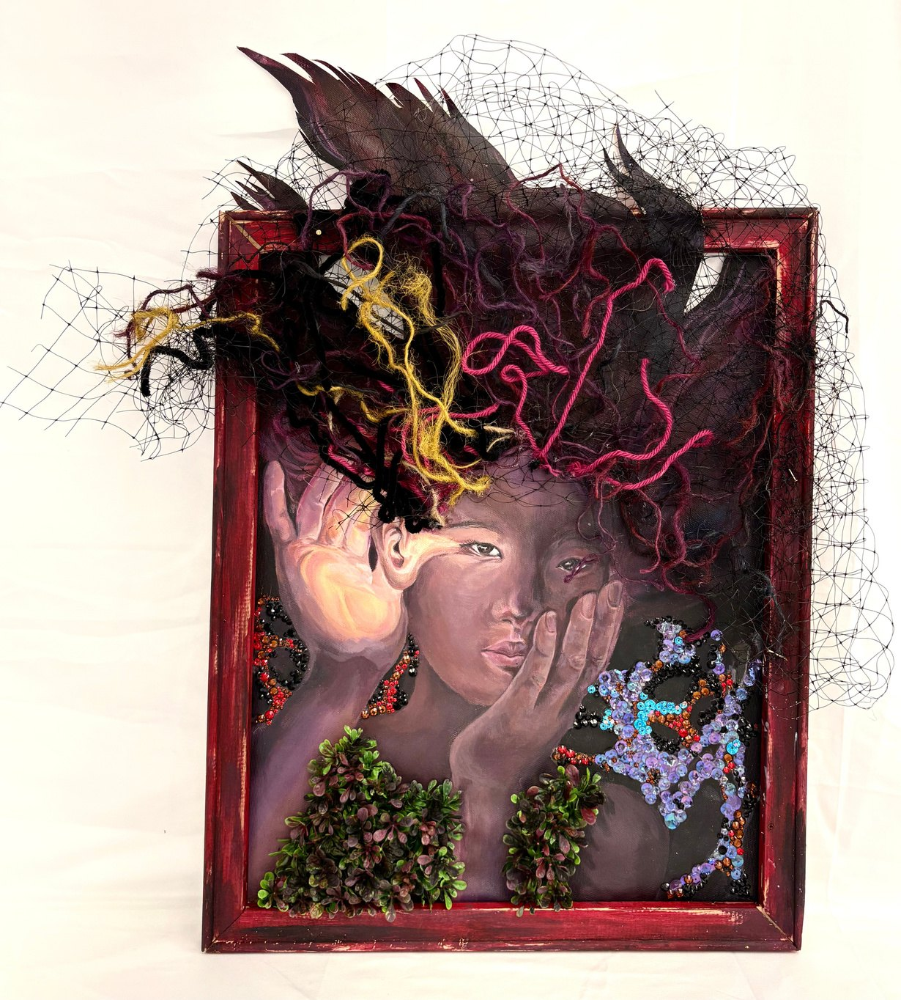

The Garden of Listening
- Medium
- Mixed media
- Materials
- Acrylic, yarn, sequins, decorative gems, netting, artificial foliage, wooden frame
- Size
- 18.5 × 23.5 in
The Garden of Listening represents the importance of gratitude, patience, and finding peace amid life’s uncertainties. Tangled yarn, netting, and scattered embellishments create a sense of chaos, reflecting the stress and distractions that often surround us, yet the woman remains focused in her own idea of Eden. Her glowing ear symbolizes the importance of listening beyond the noise, recognizing the people, moments, and blessings that often go unnoticed. Rather than escaping the chaos, she chooses to appreciate the beauty that continues to exist within it.
Through this piece, I wanted to convey that peace doesn’t come from having a life free of difficulties, but from remaining grateful for what we have and finding the patience to work through challenges, one step at a time.